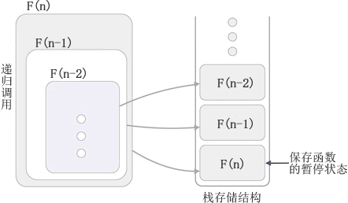

首页 > 编程笔记
递归算法
编程语言中，我们习惯将函数（方法）调用自身的过程称为递归，调用自身的函数称为递归函数，用递归方式解决问题的算法称为递归算法。
函数（方法）调用自身的实现方式有 2 种，分别是：
1) 直接调用自身，例如：
设计递归函数时，我们必须为它设置一个结束递归的“出口”，否则函数会一直调用自身（死循环），直至运行崩溃。接下来我们以“用递归方式求 n! ”为例，给大家展示一个正确的递归函数。
n! 指的是求 1*2*3*...*n 的值，如下 C 语言程序中的 factorial() 就是实现求 n! 的递归函数：
假设输入 n 的值为 4，梳理一下 factorial() 函数的执行过程：
程序的执行结果为：
递归函数执行时，调用者会将执行代码的权力移交给被调用者，同时还可能会向被调用者传输一些数据。此后，调用者将暂停执行，直至被调用者执行完成并将执行代码的权力交换给调用者后，它才能继续执行。
例如在求 n! 的递归函数中，factorial(n) 是调用者，函数内部的 factorial(n-1) 是被调用者。当 n 的值不为 1 和 0 时，调用者会将执行代码的权值移交给被调用者，同时会将 n-1 的值传递给被调用者。此后，factorial(n) 会暂停执行，直至 factorial(n-1) 执行完毕后，factorial(n) 才能继续执行。
为了确保调用者能够从暂停状态继续执行，当发生递归调用时，多数编程语言都使用栈结构保存调用者的状态信息，包括暂停时局部变量的值、寄存器中保存的数据等等。
图 1 展示了函数递归调用的底层实现过程：
如图 1 所示，F(n) 调用了 F(n-1)，因此 F(n) 会暂停执行，将执行代码的权力移交给 F(n-1)，F(n) 的暂停状态也会入栈保存；同样的道理，F(n-1) 中调用了 F(n-2)，所以 F(n-1) 暂停执行，暂停状态入栈保存，执行代码的权力移交给 F(n-2)......直至递归停止，执行代码的权力会移交给栈中最顶部的函数，该函数的暂停状态信息会从栈中取出并恢复，该函数继续执行，执行完成后再将执行权力移交给栈顶的函数。直至 F(n) 出栈并执行完成，整个递归过程才算完成。
除了求 n! 外，递归算法还可以解决斐波那契数列问题，很多算法也都需要借助递归实现，例如分治算法、回溯算法等，后续会给大家一一进行讲解。
函数（方法）调用自身的实现方式有 2 种，分别是：
1) 直接调用自身，例如：
int funciton(/*...*/) {
//......
//调用自身
function(/*...*/);
//......
}
2) 间接调用自身，例如：
int funciton1(/*...*/) {
//......
//调用另一个函数
function2(/*...*/);
//......
}
int function2(/*...*/) {
//......
//调用function1()函数
funciton1(/*...*/);
//......
}
程序中，function1() 函数内部调用了 function2() 函数，而 function2() 函数内部又调用了 function1() 函数。也就是说，function1() 函数间接调用了自身。设计递归函数时，我们必须为它设置一个结束递归的“出口”，否则函数会一直调用自身（死循环），直至运行崩溃。接下来我们以“用递归方式求 n! ”为例，给大家展示一个正确的递归函数。
n! 指的是求 1*2*3*...*n 的值，如下 C 语言程序中的 factorial() 就是实现求 n! 的递归函数：
#include <stdio.h>
int factorial(int n) {
//递归的出口
if (n == 1 || n == 0) {
return 1;
}
//函数调用自身
return n * factorial(n - 1);
}
int main()
{
int n;
scanf("%d", &n);
printf("%d! = %d", n,factorial(n));
return 0;
}
除非变量 n 的值为 1 或者 0，否则 factorial() 函数会一直调用自身。假设输入 n 的值为 4，梳理一下 factorial() 函数的执行过程：
- 调用 factorial(4) 时，由于形参 n 的值为 4，不等于 0 或 1，所以执行 4 * factorial(3) 并返回它的值。为了求出这个表达式的值，必须先执行 factorial(3) 并得到它的返回值，所以编译器转而求 factorial(3) 的值，4 * factorial(3) 的求值被搁置，等待后续再计算；
- 调用 factorial(3) 时，由于形参 n 的值为 3，不等于 0 或 1，所以执行 3 * factorial(2) 并返回它的值。为了求出这个表达式的值，必须先执行 factorial(2) 并得到它的返回值，所以编译器转而求 factorial(2) 的值，3*factorial(2) 的求值被搁置，等待后续再计算；
- 调用 factorial(2) 时，由于形参 n 的值为 2，不等于 0 或 1，所以执行 2 * factorial(1) 并返回它的值。为了求出这个表达式的值，必须先执行 factorial(1) 并得到它的返回值，所以编译器转而求 factorial(1) 的值，2 * factorial(1) 的求值被搁置，等待后续再计算；
- 调用 factorial(1) 时，由于形参 n 的值为 1，函数的返回值为 1。
- 知道了 factorial(1) 的返回值为 1，先前被搁置的 2*factorial(1) 的值就可以计算出来，因此 factorial(2) 的返回值为 2；
- 知道了 factorial(2) 的返回值为 2，先前被搁置的 3*factorial(2) 的值就可以计算出来，因此 factorial(3) 的返回值为 6；
- 知道了 factorial(3) 的返回值为 6，先前被搁置的 4*factorial(3) 的值就可以计算出来，因此 factorial(4) 的返回值为 24；
程序的执行结果为：
4
4! = 24
递归的底层实现机制
为了方便讲解，当一个函数直接或间接调用自身时，我们将这个函数称作调用者，将直接或间接调用的自身称作被调用者。递归函数执行时，调用者会将执行代码的权力移交给被调用者，同时还可能会向被调用者传输一些数据。此后，调用者将暂停执行，直至被调用者执行完成并将执行代码的权力交换给调用者后，它才能继续执行。
例如在求 n! 的递归函数中，factorial(n) 是调用者，函数内部的 factorial(n-1) 是被调用者。当 n 的值不为 1 和 0 时，调用者会将执行代码的权值移交给被调用者，同时会将 n-1 的值传递给被调用者。此后，factorial(n) 会暂停执行，直至 factorial(n-1) 执行完毕后，factorial(n) 才能继续执行。
为了确保调用者能够从暂停状态继续执行，当发生递归调用时，多数编程语言都使用栈结构保存调用者的状态信息，包括暂停时局部变量的值、寄存器中保存的数据等等。
图 1 展示了函数递归调用的底层实现过程：

图 1 递归的底层实现
图 1 递归的底层实现
如图 1 所示，F(n) 调用了 F(n-1)，因此 F(n) 会暂停执行，将执行代码的权力移交给 F(n-1)，F(n) 的暂停状态也会入栈保存；同样的道理，F(n-1) 中调用了 F(n-2)，所以 F(n-1) 暂停执行，暂停状态入栈保存，执行代码的权力移交给 F(n-2)......直至递归停止，执行代码的权力会移交给栈中最顶部的函数，该函数的暂停状态信息会从栈中取出并恢复，该函数继续执行，执行完成后再将执行权力移交给栈顶的函数。直至 F(n) 出栈并执行完成，整个递归过程才算完成。
除了求 n! 外，递归算法还可以解决斐波那契数列问题，很多算法也都需要借助递归实现，例如分治算法、回溯算法等，后续会给大家一一进行讲解。
关注公众号「站长严长生」，在手机上阅读所有教程，随时随地都能学习。内含一款搜索神器，免费下载全网书籍和视频。

微信扫码关注公众号